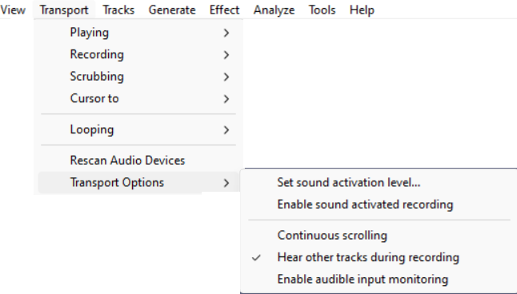
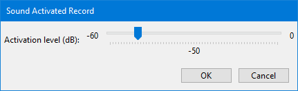

Transport Menu: Transport Options
- 
Set sound activation level
- 
Sets the activation level above which Sound Activated Recording will record.
Enable sound activated recording
Toggles on and off the Sound Activated Recording option in Recording Preferences. This option can be useful to save disk space when recording an intermittent input, such as a call recording system.
When turned on (indicated by the check mark in the menu item), press the Record button in Transport Toolbar to start the Sound Activated Recording session. Recording will now occur whenever the received input is above the Sound Activation Level you specify (see the menu item above). Recording will pause whenever the received input falls below that level. Press the Stop button to stop the recording session.
Sound Activated Recording can be combined with Timer Record to set the start and end time of a Sound Activated recording.
Continuous scrolling
You can change Audacity to play and record with a fixed head pinned to a position in the Timeline. In this mode the head remains static and the waveforms will move as the audio is played or recorded.
See this section on the Timeline page for more details.
Hear other tracks during recording
This is "overdubbing" and toggles on and off the Hear other tracks during recording (overdub) option in Recording Preferences.
When turned on (indicated by the check mark in the menu item), any existing audio tracks will play when you start recording, according to the state of their or buttons.
Hear other tracks during recording (overdub) is "on" by default in Audacity.
Enable audible input monitoring
Toggles on and off the Audible inut monitoring option in Recording Preferences. (This used to be knowns as Software Playthrough in earlier versions of Audacity).
When turned on (indicated by the check mark in the menu item), input being recorded will play, but there will be a noticeable delay (latency) before the input is heard. For some examples of setting up equipment to record without playthrough latency, see this Tutorial about Recording overdubs.
| Audible input monitoring must be unchecked when recording computer playback because it will create feedback echoes. |